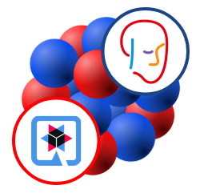

Drools 8 Final – toward a modular and cloud native rule engine
The Drools team is happy to announce that our rule engine reached the 8 Final release.
Drools 8-series is a natural evolution of the 7.x-stream, incorporating many features and lessons learned integrating with Kogito and many cloud-native use cases.
The purpose of this article is to give a high level overview of the features introduced with this new major release and give some insights on the next developments on which we are working.
Let us know your feedback while using these new Drools 8 capabilities, as we are iterating our future plans on them!
Developer Experience
Write rules in pure Java (or Bring-Your-Own-Language)!
While we know you have learned to love our very own Drools Rule Language (DRL), we also understand how hard can it be devoting time to learn a new programming language, as close to Java it may be!
We hear you! This is why, with Drools 8, we are introducing a new fully typed, Java-based DSL to write rules without leaving the comfort of your traditional IDE. In fact, this allows you to write rules in your favorite JVM language, including Scala and Kotlin!
Skyrocketing To The Cloud: The Drools Quarkus Extension
We are also working on introducing a new Drools-focused Quarkus extension; this extension is dedicated to enable the use of the Drools core engine as part of a Quarkus application.

Please notice this new Drools Quarkus extension is not a replacement for Kogito. For more comprehensive capabilities in cloud-native scenarios which are not part of this new extension, such as automatic REST endpoint generation, we invite developers to keep using and explore Kogito.
Because of its experimental nature, it is currently not available on the main Quarkus channels, but you can find a quickstart-style example and a quarkus-style guide in the Drools repository at those links.
Not Just Rules: A Modular Engine For AI
Up to version 7 Drools was a monolithic rule engine with all its features implemented (and tightly interconnected) in one single core module. In Drools 8 the engine has been heavily reworked to make it more modular, isolating the non-core features, like the Truth Maintenance System (TMS), the protobuf based serialization and the experimental support for traits and different belief systems, in separated modules that the users can optionally bring into their projects only when specifically required.
But this modularization effort didn’t stop there. The main and ambitious goal is to make Drools a container where many other AI related technologies, like DMN and PMML, can coexist and cooperate. With this goal in mind it has developed an internal framework, with codename Efesto, allowing to plug different engines and to let them leverage each other in a loosely coupled way.
Codename Efesto: an internal compile-time and run-time coordination framework
Over the years a common pattern emerged in our engines. They all have a phase where, very broadly, a source model is translated to an executable unit (compilation); and they all have a phase where that executable unit is used to make actual evaluation (runtime). Besides, some of them may need to invoke others for full evaluation, e.g. some decision models invoke prediction’ ones, and some prediction models use the rule engine. Efesto is the codename we gave the internal framework we designed to provide a common, stable, unified API to support such phases, and allow to chain the processing of different models, either at compile-time or at run-time. The benefit is improved code reusability and overall simplification of such processing phases. We plan to use this new API both for integrating engines with each other (when a source model needs to refer to a different source model) and to easily extend usage of current implementations in different environments.
More details about the overall design can be found in Efesto Refactoring – Introduction, while a deeper technical explanation has been provided in Efesto Refactoring – Technical Details.
Rule Units: A New Modular Programming Model For Rules
The definition of large rule bases has always made evident the need of slicing it in logically independent subparts. In the past Drools fulfilled this requirement in a few different ways: it is possible to split the rules in multiple KieBase and make a KieBase to include others, rules in the same KieBase can be further organized into agenda-groups and also the working memory can be partitioned unisg entry-points.
A rule unit is a unified, top-down module, describing a set of rules; the unit describes also the shape of the data that such rules are able to manipulate, through the introduction of the "data source" abstraction that partitions the working memory into the typed equivalent of an entry point. In other words, a rule unit encapsulates the unit of execution for rules and the data against which the rules will be matched. More information about how rule units and data sources are available here.
The new Java-based DSL builds upon the rule unit concept, but you can still define rule units using good ol’ DRL!

Experimental features and what’s next
The Drools team keeps experimenting with new features that could bring new capabilities to the engine or improve the overall user experience. At the moment the efforts to bring forward these experiments are concentrated in 2 main areas.
Impact Analysis
The impact analysis feature analyzes the relationships between the rules generating an oriented graph that shows which rules can be impacted by the firing of another rule. In this way, when it is necessary to analyze the impact of a change to a specific rule, it becomes easy to visually determine which part of a rules set will be interested by this change.

DRL code editor
A DRL code editor based on Language Server Protocol (LSP) is currently under development. LSP could be applied to various IDEs and editors like VS Code and Neovim via extensions, plugins, or configuration. Not yet released at the moment, but stay tuned!
From Drools 7 to 8
Despite all the new features introduced during the development of Drools 8, the old API based on the old KieContainer/Base/Session is still fully working and supported, so if you’re not comfortable in migrating immediately your existing codebase relying on the Drools 7 API, this won’t prevent you to upgrade to Drools 8. Nevertheless we strongly suggest you to also give a look at the new rule unit based programming model and evaluate if it could be a better fit for your needs. If you are still in doubt, try the Java-based DSL and let us know!
These migration guides can be very helpful to support your migration plans from Drools 7 to Drools 8, including directions on how to migrate a KIE Server-based application to Kogito.
JDK 11 is now the minimum requirement to run Drools, while at least maven 3.8.6 is necessary to build Drools from sources or use the maven integration capabilities provided by the kie-ci module. More information on this, including a minimal list of the features that have been deprecated with Drools 8 or retired, is available in the release notes.
A note on version numbering
It may be surprising that we deployed the first stable release of Drools 8 Final with version Drools 8.29.0.Final. We did so for the twofold reason of continuing with the numbering of the minor version that we started while Drools 8 was still in beta and avoiding confusion with other downstream projects of the kie group like Kogito and OptaPlanner that are aligned with the same minor version.
References
You can find the Drools 8 documentation at this link.